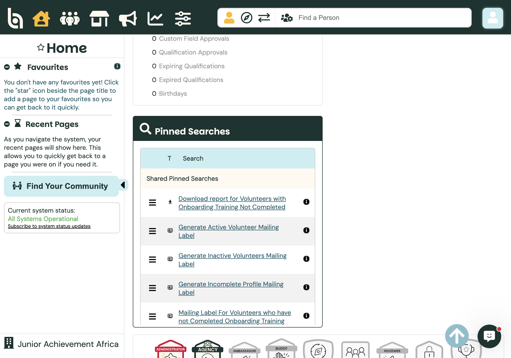
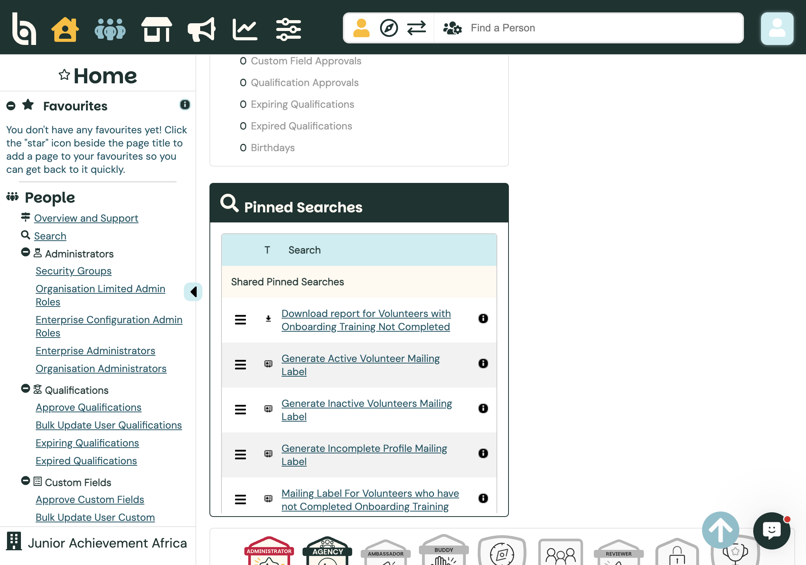
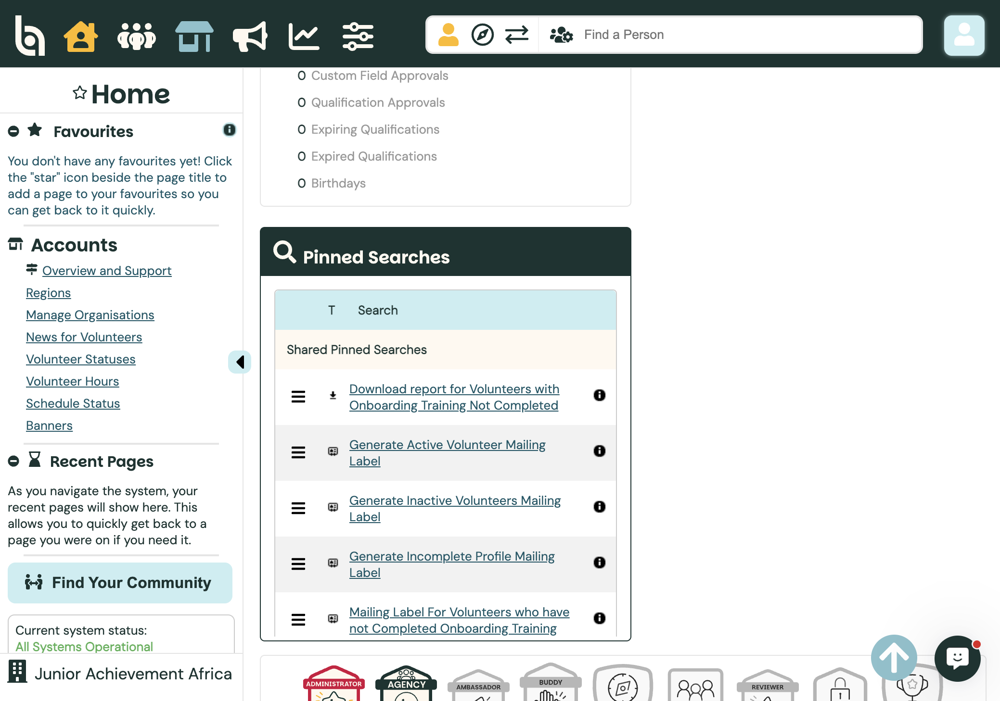
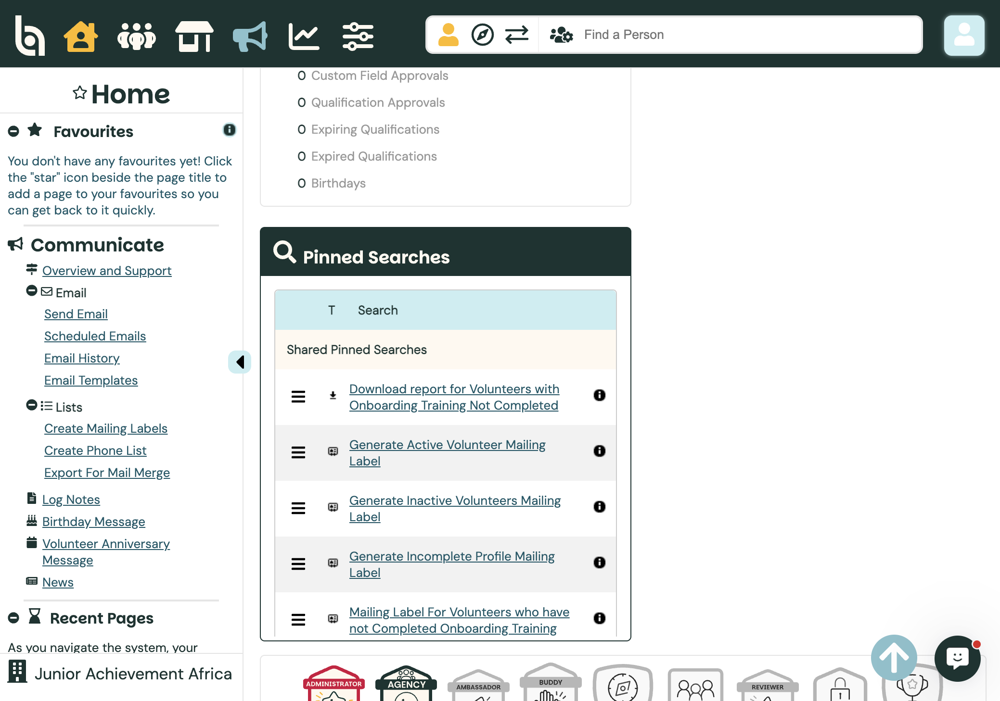
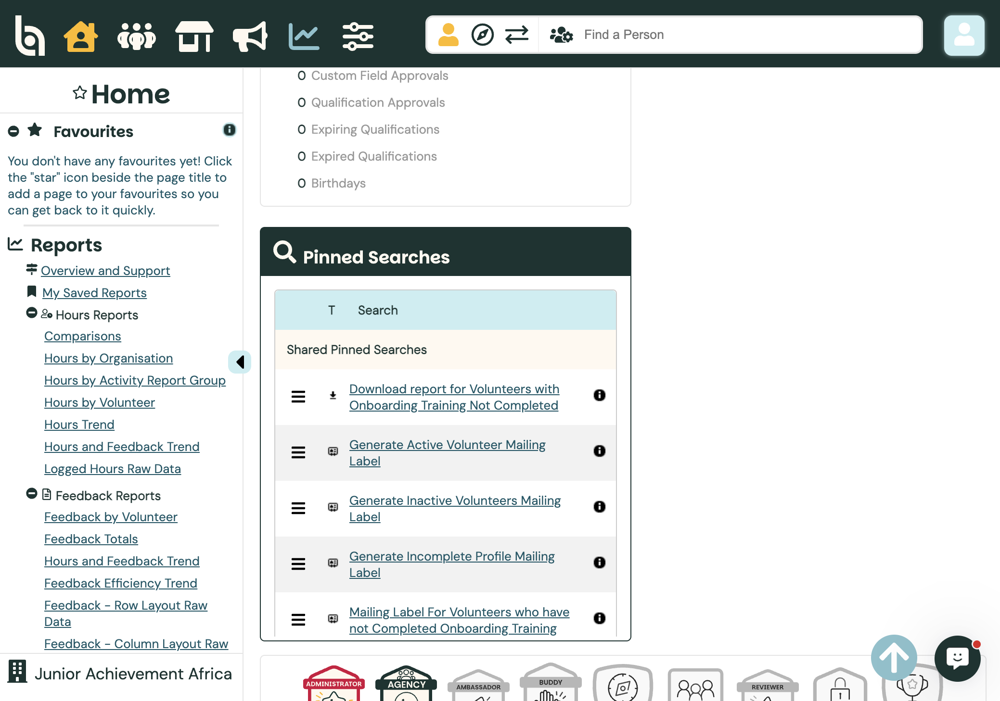
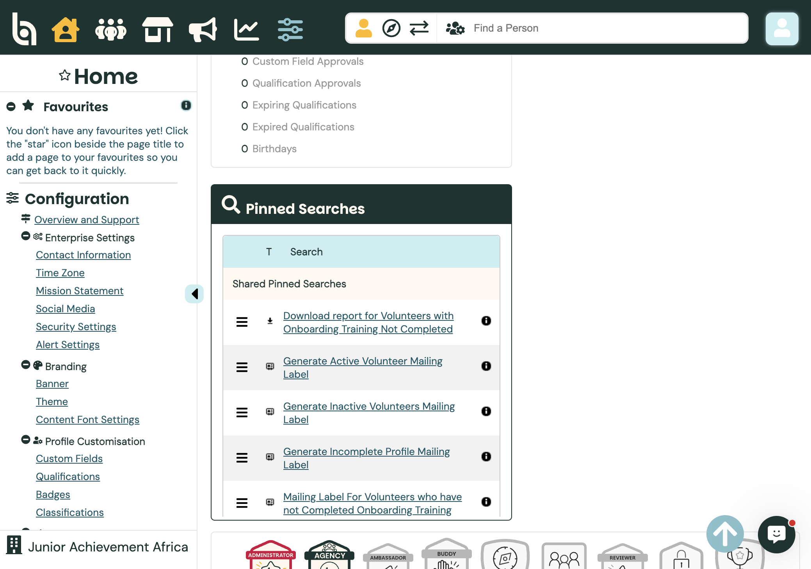
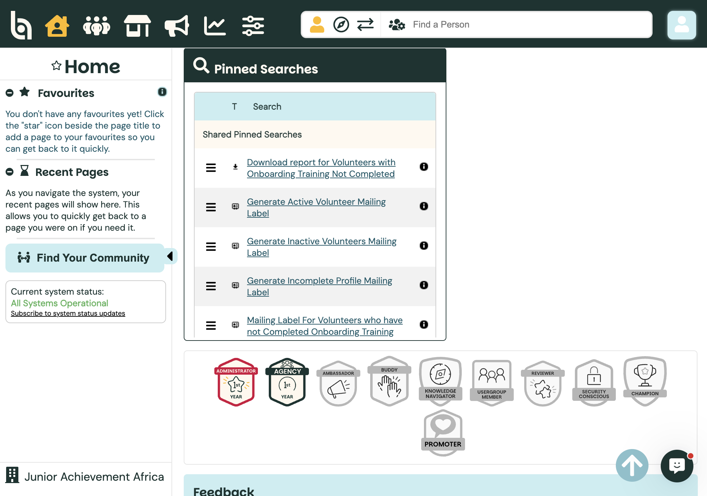
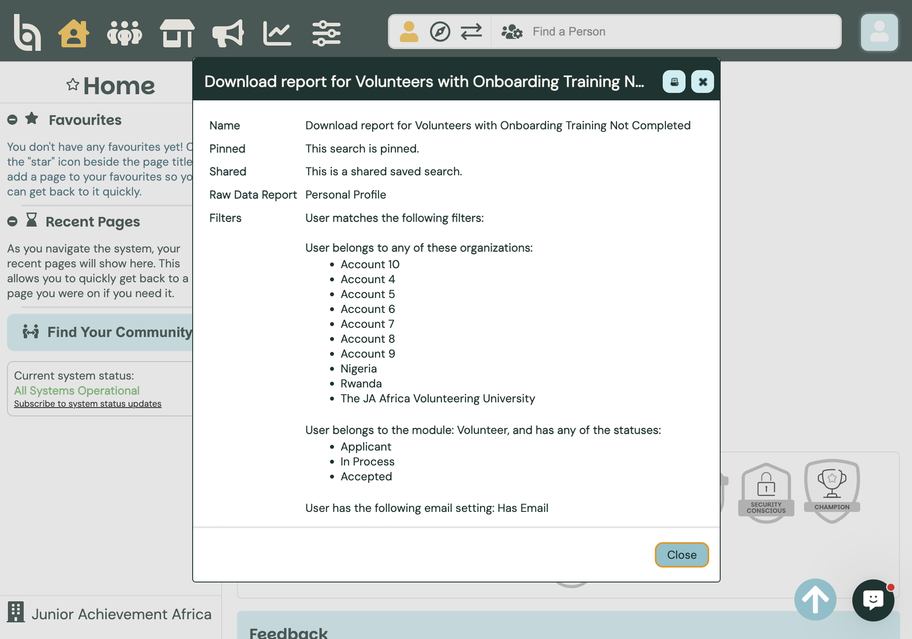

Admin guide
Audience · AdministratorEnterprise Home & Pinned Searches
After you open the Junior Achievement Africa enterprise account, the Home dashboard shows top menus, status shortcuts, and Pinned Searches — one-click shortcuts to saved filters for email, mailing labels, and reports.
Path: Account selection → Junior Achievement Africa
Enterprise Home overview
The enterprise Home screen is your hub across all DeJAVU organisations. Use the icon bar at the top to open each main area; the left sidebar mirrors that menu once you select one.

Top menus Pinned SearchesAlso on Home: status counts (approvals, birthdays), Favourites (star any page title), Recent Pages, and Find a Person in the header.
Top menus and what they do
Home — Dashboard with status widgets and pinned searches.
People — Find and manage people across the enterprise: Overview and Support, Search, Administrators (Security Groups, Limited Admin Roles, Enterprise / Organisation Administrators), Qualifications (approve, bulk update, expiring / expired), and Custom Fields (approve, bulk update).

PeopleAccounts — Enterprise monitoring of organisations: Regions, Manage Organisations, News for Volunteers, Volunteer Statuses, Volunteer Hours, Schedule Status, and Banners.

AccountsCommunicate — Reach volunteers: Send Email, Scheduled Emails, Email History, Email Templates; Create Mailing Labels, Phone List, Export for Mail Merge; Log Notes, Birthday / Anniversary messages, and News.

CommunicateReports — Hours, Feedback, Schedule, and General raw-data reports (for example Hours by Organisation, Logged Hours Raw Data, Personal Profile Raw Data, Survey Reports), plus My Saved Reports.

ReportsConfiguration — Enterprise settings, branding, profile customisation, recruitment, activity templates, and resources. Do not change Configuration unless you have been asked to.

View onlyPinned Searches on Home
Pinned Searches are saved search criteria placed on the Home dashboard so you can run them in one click. Clicking a name opens the feature it belongs to (email, mailing labels, or a report) and runs the search automatically.
JA Africa currently lists these under Shared Pinned Searches (visible to admins who have access):
- Download report for Volunteers with Onboarding Training Not Completed
- Generate Active / Inactive / Incomplete Profile mailing labels
- Mailing Label for volunteers who have not completed Onboarding Training
- Send Email to Active / Inactive volunteers, incomplete profiles, or incomplete onboarding
- View and Export Active / Inactive Volunteers

Shared Pinned SearchesUse the options menu (☰) on a row for Check Number of Results, View (see filters), Rename, Unpin, Change Associated Report Type (export searches), or Delete. Prefer View and Check Number of Results for learning — avoid Unpin or Delete unless you intend to change the team shortcuts.
What View shows (example)
Opening View on a pinned search shows whether it is pinned and shared, which report type it uses, and the filters. Example: the onboarding download report is a shared Personal Profile raw-data search for volunteers (Applicant / In Process / Accepted) across JA Africa organisations who have not completed onboarding.

Pinned · SharedOther options (Better Impact)
From the Better Impact search guide, you can also:
- Save a search from People → Search, Communicate → Send Email, mailing labels, or certain reports — optionally tick Pin Search and/or Share this search
- Manage later via Manage Saved Searches in the same feature (pin / unpin, rename, delete, convert to shared)
- Use Dynamic Dates so date filters stay relative (for example “last 6 months”) every time you run the search
- Keep personal pins under My Pinned Searches and team pins under Shared Pinned Searches when both exist
Enterprise note: shared searches stay in the account where they were created — they do not automatically appear in sub-accounts. Pinning or unpinning a shared search affects everyone who can see it. Reference: Comprehensive Guide to Searches